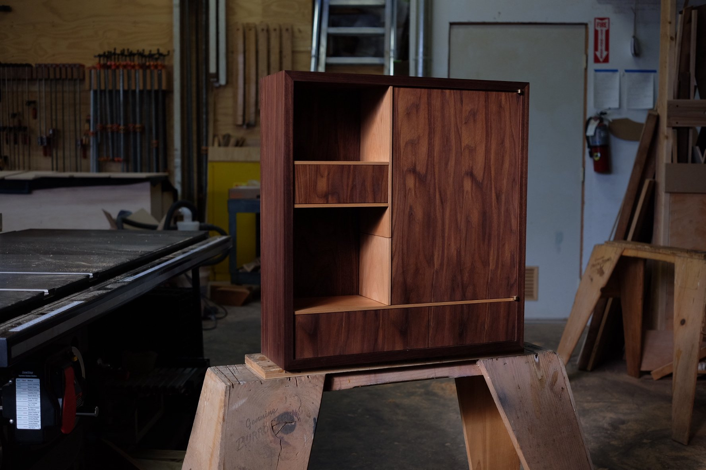
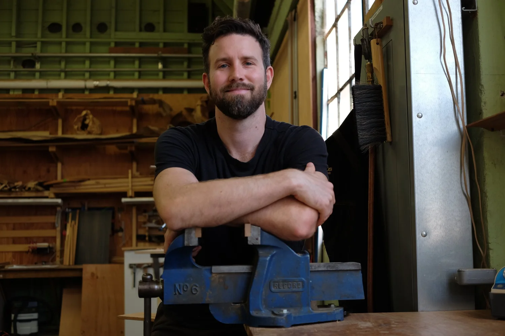

Custom Furniture and Built-Ins
I design and build custom furniture and built-ins, from cabinets, shelving, and wardrobes to dining tables, credenzas, nightstands, and one-of-a-kind pieces made specifically for your space.
As a furniture maker I'm drawn to both built-ins and free-standing furniture for the same reason: the best pieces pair beautiful form with intuitive function and feel fully integrated into a room. Whether anchored or movable, each piece is designed to bring clarity to clutter, purpose to blank areas, and a sense that it has always belonged exactly where it lives.
Unlike typical built-ins or commercial cabinetry, my work is approached as furniture first—crafted with thoughtful proportions, real hardwood materials, and details meant to be noticed up close. The result is work that feels intentional and designed, not simply installed.
If you're looking for custom built-ins or furniture that feels truly considered rather than assembled, this is the work I love doing.
Let's collaborate on a custom furniture design:
inquire@flatow.furniture
Gallery


White Oak and Cherry Custom Dining Table
Radial match white oak top with cherry knife edge. Bent and tapered cherry legs.


Wall Hung Walnut and Beech Cabinet
Hand cut dovetail drawers. Slip matched veneered doors and drawers. Detachable magnetic pulls and invisible magnetic catches.
Feel free to reach out with questions or inquiries:
inquire@flatow.furniture


Mahogany Interior Bench
Mortise and tenon joinery for strength and durability.
Feel free to reach out with questions or inquiries:
inquire@flatow.furniture


Locally Sourced Madrone Built-in Desk
Chamfered edge for wrist comfort and chunky aesthetic. Scribed to fit drywall space with no gaps.
Reviews
Read Reviews on GoogleHover to read more — James MadsonTo praise David as a skilled craftsman only would, I think, fall far short in describing his qualities. Yes, he is exceptionally skilled and produces some beautiful work. But skill by itself isn't enough to encompass the scope of what it means to be great in a craft. David cares. There's a level of care in his work, a deep attentiveness, that is extremely rare to come across, in any profession. He relishes the craft, bringing a love of the material and a mindfulness to the piece that you can feel in the end result. There is an endless perfectibility in the crafting of an object, and David does not hold back in this indulgence, if one can call it that, as his is certainly a disciplined endeavor. My highest recommendation!
Hover to read more — Mee LeeDavid designed and fabricated the most beautifully detailed custom table for my small apartment. He listened to my initial concept and understood what I wanted without having to over-explain. His communication throughout the process was excellent. The result was outstanding and truly a beautiful piece of functional art. We will be working with him on future furniture builds.
Hover to read more — Kyla SiedbandDavid does incredible work. He built a custom mahogany bench for my entryway that I'll cherish for life. Working with David was collaborative, thoughtful, and a lot of fun.
Hover to read more — Rebecca MollDavid built me the most beautiful custom sunglasses holder, and I genuinely cherish it every single day. From the very first conversation, he took my vague idea and turned it into something truly special. It's rare to find someone who combines talent, precision, and heart.
About Me
I'm a furniture maker with a studio and workshop in San Francisco.
I individually design and build premium custom furniture and cabinetry with an attention to the details that matter most to my clients. My aim is to provide a high quality experience from the first email or phone call to the time I deliver a piece of furniture or complete an install.
I work closely with clients in the Bay Area, through a creative back and forth to design around their spaces and lives. I pay special attention to provide an experience and process that's as high quality as the pieces themselves. Each piece is personally built by me in my shop in San Francisco from high quality materials with traditional techniques and aided by modern tools.

Explore The Process On Social Media